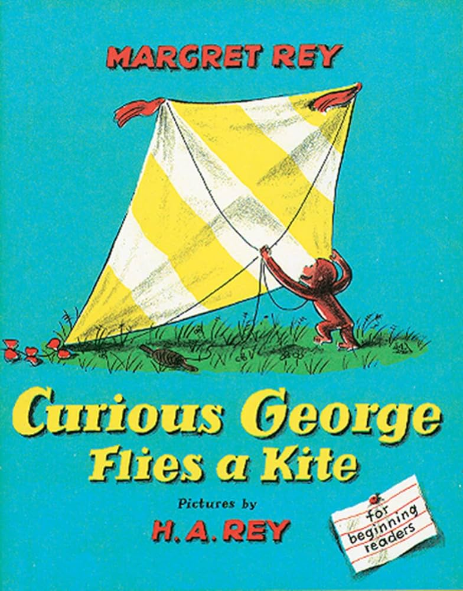
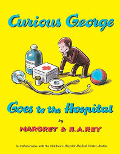
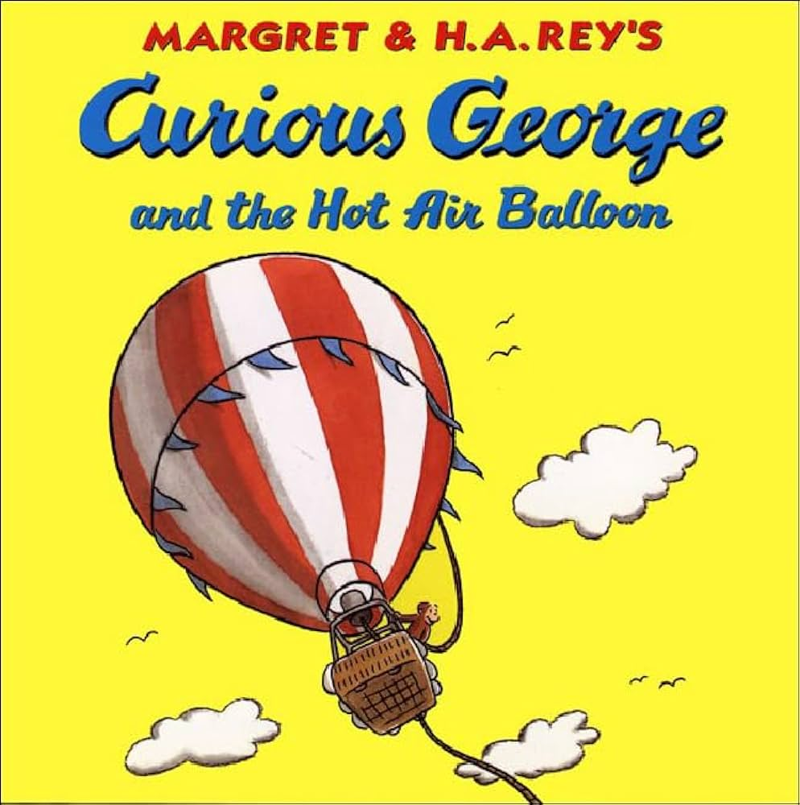
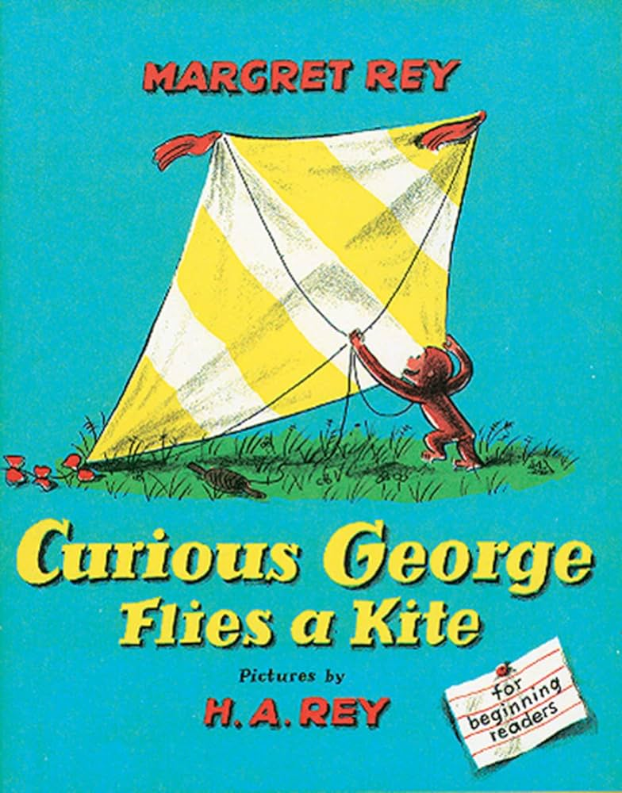
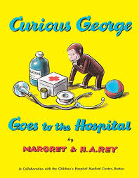
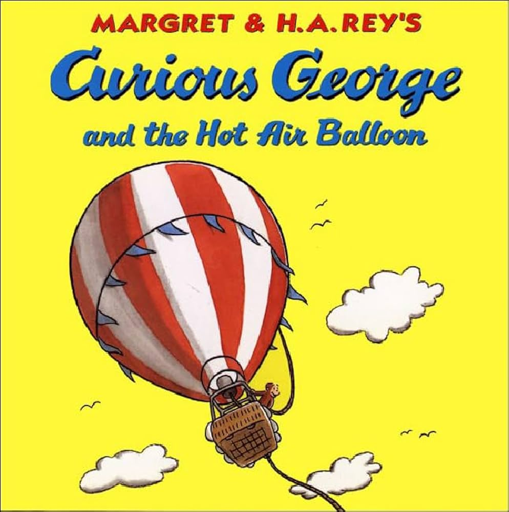

Popular Literature
Curious George Flies a Kite
Curious George's Dream

Curious George Goes to the Hospital
Curious George and the Hot Air Balloon
Curious George Flies a Kite
Curious George's Dream
Curious George Goes to the Hospital
Curious George and the Hot Air Balloon
Curious George and all associated images are the property of Houghton Mifflin Harcourt Publishing Company used under fair use all rights reserved